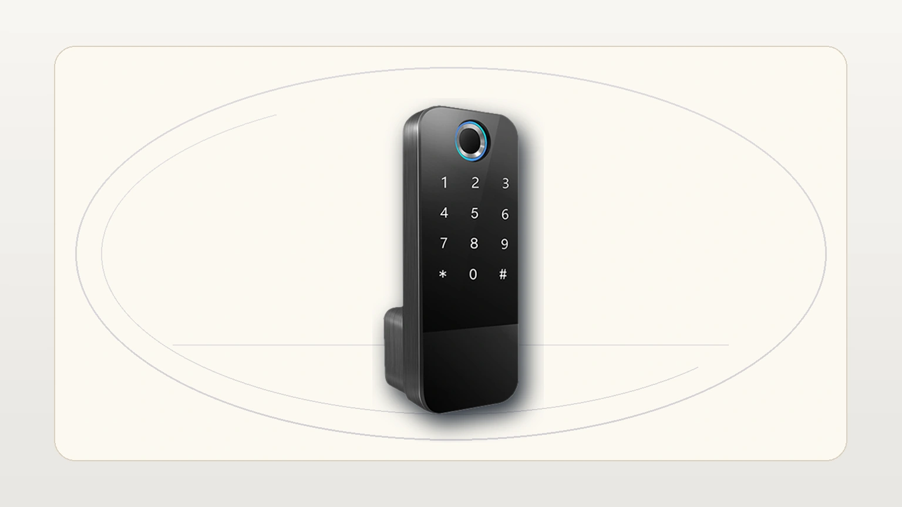
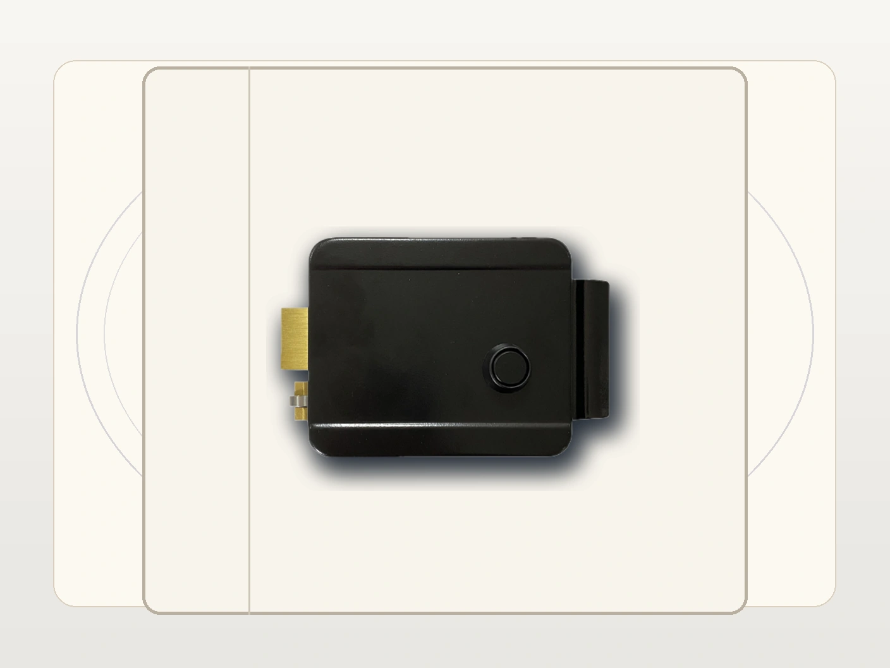
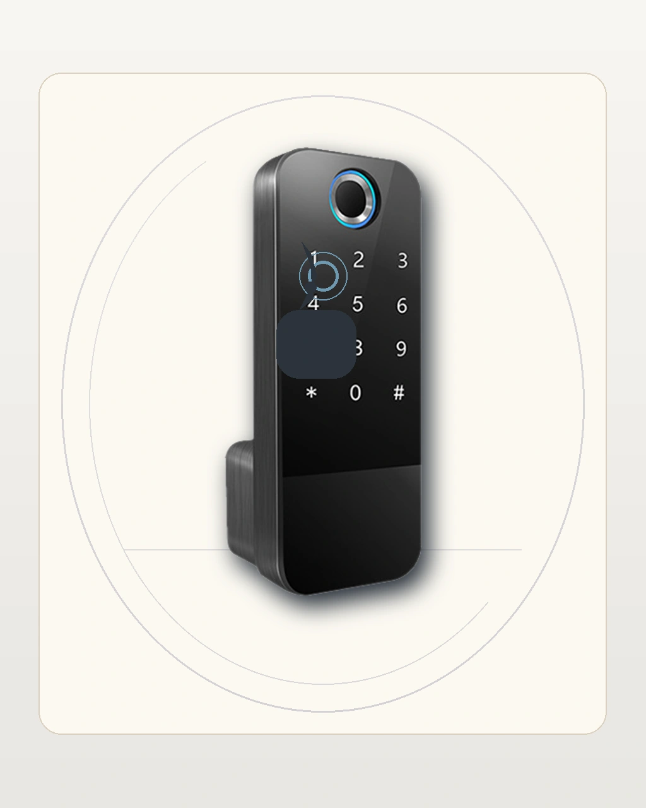
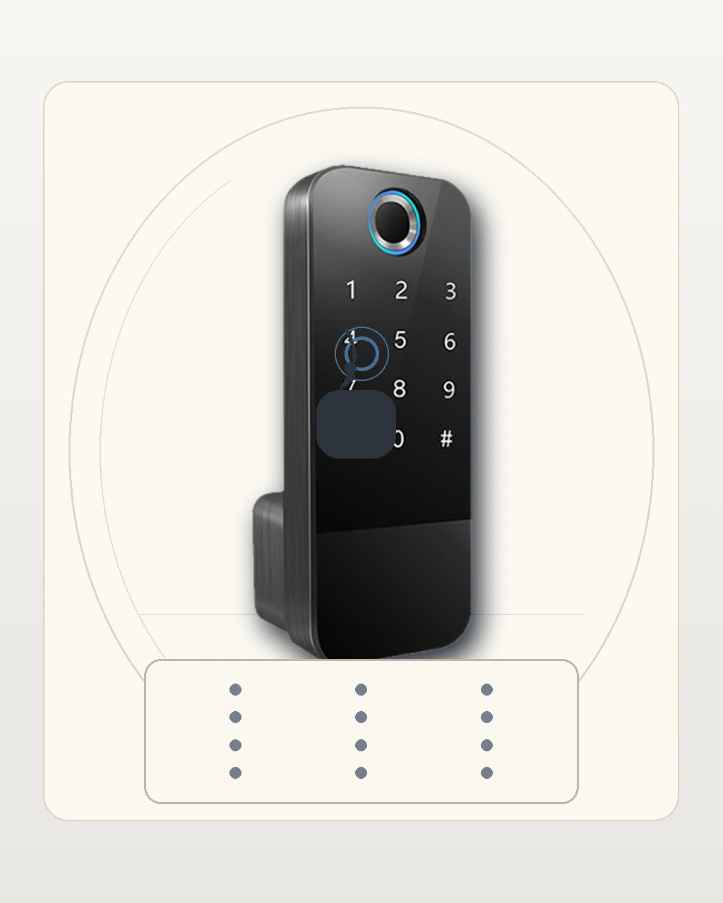
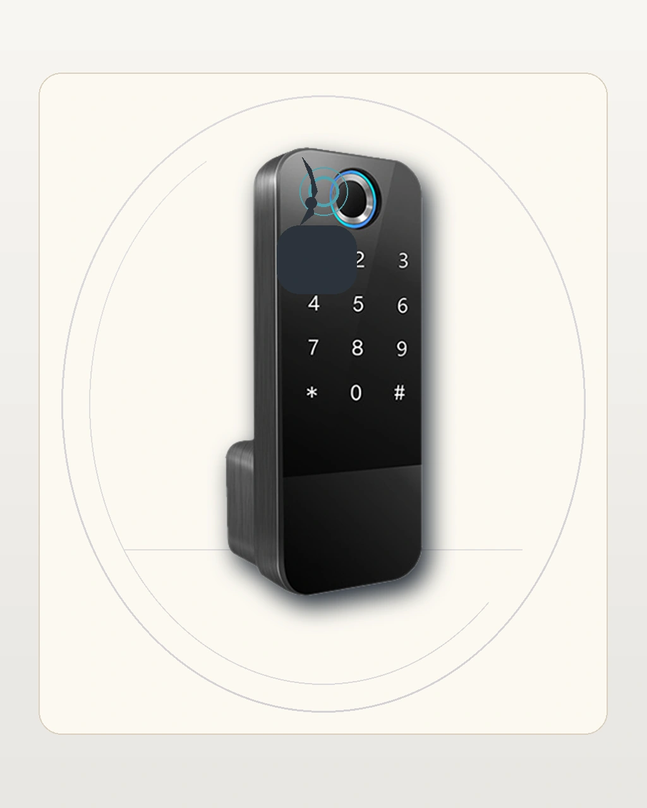
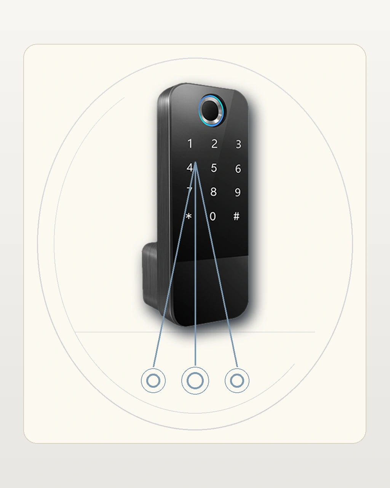
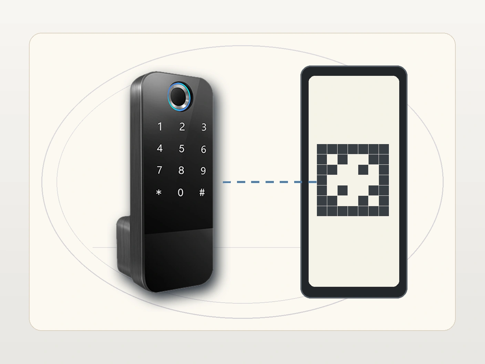
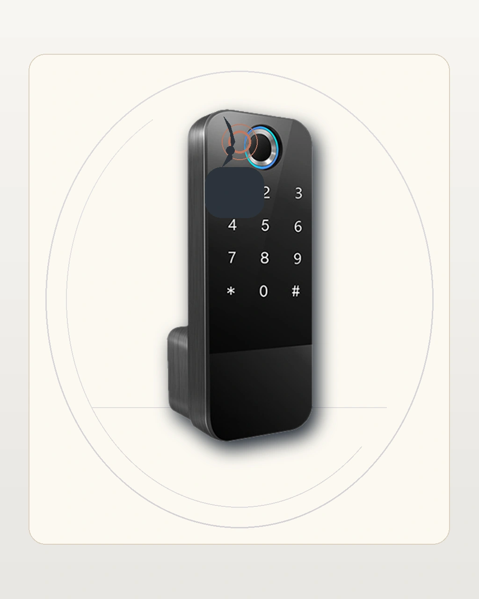
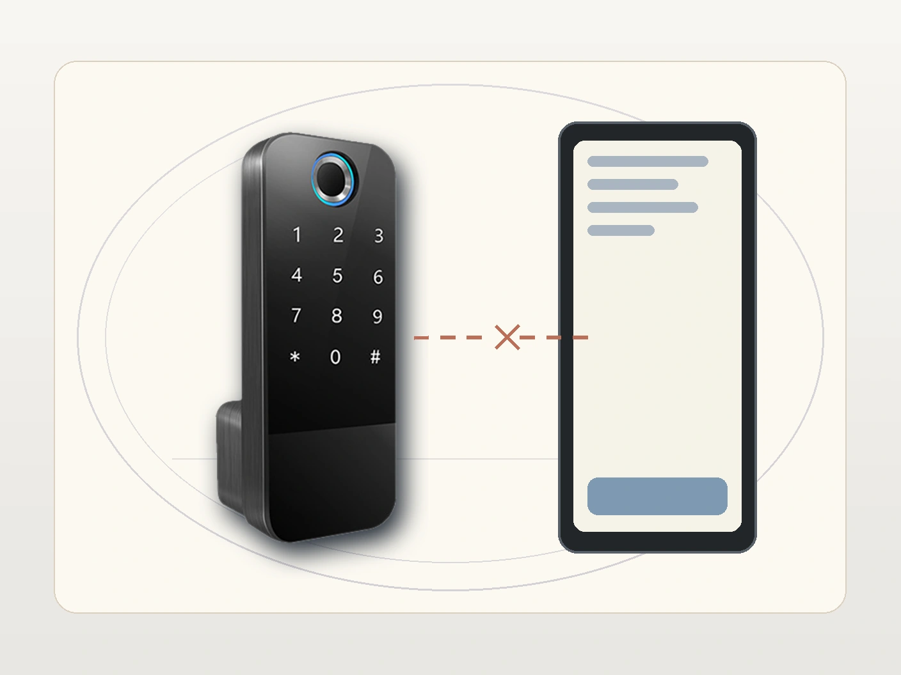
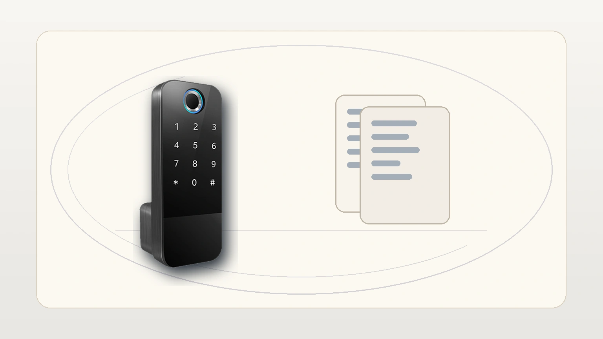

e-Shield
Borrador inicial para revision visual
Este borrador usa exclusivamente assets review-draft del reset visual 2026-05-13 para revisar la cobertura completa del manual antes de aprobacion final.
1. Introduccion
Este manual resume el uso principal de e-Shield con foco en documentacion practica y compatible con implementacion web.
2. Capacidades clave
- Conectividad: Bluetooth para gestion cercana y conexion Wi-Fi mediante gateway para funciones remotas.
- Modos de apertura: huella dactilar, contrasena, tarjeta IC y llaves de respaldo.
- Funciones remotas: sincronizacion, gestion remota de tarjetas y ajustes desde la aplicacion cuando existe gateway.
- Capacidad: hasta 100 huellas, 100 tarjetas y 100 contrasenas.
- Privacidad: contrasena virtual de hasta 16 digitos.
- Seguridad: bloqueo por 90 segundos tras 5 errores y alerta de bateria baja.
3. Vista general y primeros pasos


Antes de configurar:
- verifica que el modulo exterior y la caja interior trabajen como dos piezas distintas
- instala las baterias AA y despierta el modulo exterior
- define el administrador principal
- valida la llave fisica de respaldo
4. Agregar administrador

El flujo recomendado para web es:
- activar el teclado exterior
- entrar al menu principal
- abrir la configuracion de usuarios
- seleccionar agregar administrador
- registrar el metodo de acceso del administrador
- guardar y probar el acceso
5. Registrar PIN o contrasena

Al documentarlo:
- deja claro que el teclado esta en el modulo exterior vertical
- evita mostrar una secuencia puntual como si fuera la clave oficial
- recuerda probar la contrasena antes de cerrar el alta
6. Registrar huellas y tarjetas

Para la web, resume este proceso asi:
- entra al menu de usuarios
- elige huella o tarjeta
- sigue la captura o enrolamiento hasta la confirmacion
- valida el acceso creado varias veces
7. Ajustes del sistema e idioma

Este recurso visual sirve para ajustes del sistema, idioma o configuraciones equivalentes. El texto tecnico o las rutas exactas deben permanecer en el contenido editorial, no dentro de la imagen.
8. App y gateway

Si la instalacion usa gateway, explica el flujo en dos capas:
- gestion cercana por Bluetooth
- funciones remotas y sincronizacion desde la app cuando el gateway esta activo
9. Solucion de problemas


Usa este bloque para validar si el paquete visual comunica bien los dos tipos de falla mas comunes: biometria y conectividad remota.
10. Descargas y documentacion

Esta imagen puede apoyar una futura seccion de ficha tecnica, instalacion y soporte comercial.
11. Estado del borrador
Este archivo es una version integral de revision. Los assets review-draft fueron reconstruidos bajo el reset visual 2026-05-13 y quedan listos para inspeccion antes de publicar el paquete final.